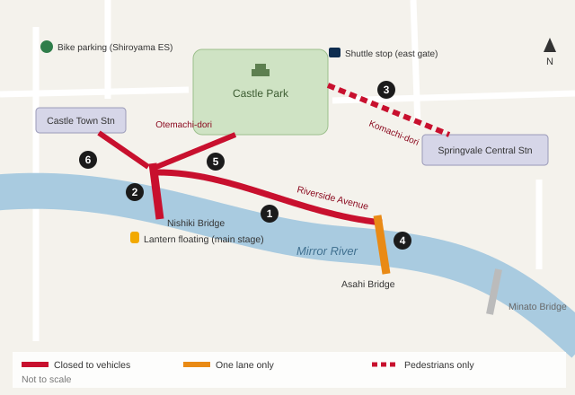

Lantern Festival: six roads to close as 320,000 visitors expected next weekend
Riverside Avenue will shut to traffic for nine hours on both days of the 68th Springvale Lantern Festival, there will be no festival parking, and Vale Rail will run ten extra trains each evening. Organisers will decide on Thursday whether the typhoon changes any plans.

Drivers in central Springvale face the city's largest road closures of the year next weekend, when the 68th Springvale Lantern Festival returns to the banks of the Mirror River on Saturday 10 and Sunday 11 October.
The Springvale Lantern Festival Executive Committee and Springvale Central Police Station on Friday published the traffic plan for the two days. Six roads will close or be restricted, the longest closure being Riverside Avenue, which shuts to all vehicles, bicycles included, between Nishiki Bridge and Asahi Bridge from 14:00 to 23:00 on both days.
The committee expects about 320,000 visitors, up from 304,000 last year, as the number of lanterns rises to 12,000 from 11,000. The programme is the same on both days. Stalls open along the 1.3 km riverside promenade at 16:00 and the lanterns in Castle Park, on Komachi-dori and along the river are lit from 17:30. At 18:00 a lantern procession leaves Springvale Castle and makes its way down to the river at Nishiki Bridge by 20:30. From 19:30 to 21:00, lanterns are floated on the river from the riverside steps below Nishiki Bridge, beside the main stage near Castle Town Station. The festival closes at 21:00.
Which roads close, and when
Komachi-dori, the old-town street that runs 650 metres from the Castle Park east gate to the North Exit of Springvale Central Station, becomes pedestrian-only from 12:00 to 22:00 on both days. Shops on the street can take deliveries until 11:30.
Nishiki Bridge closes to vehicles from 16:00 to 22:00 each day. From 19:00 to 21:00 on both evenings, walkers on the bridge will only be able to cross from north to south, to keep people moving during the lantern floating below.
Asahi Bridge stays open but is reduced to a single northbound lane from 15:00 to 23:00. Otemachi-dori, between the Castle Park south gate and Nishiki Bridge, closes from 17:30 to 21:00 on both days for the lantern procession, which runs from 18:00 to 20:30. The road in front of Castle Town Station, from the station square at the River Exit down to Riverside Avenue, is closed to vehicles from 17:00 to 22:00.

| No. | Road | Section | Saturday 10 October | Sunday 11 October | Notes |
|---|---|---|---|---|---|
| 1 | Riverside Avenue | Nishiki Bridge – Asahi Bridge (1.3 km) | 14:00–23:00 | 14:00–23:00 | All vehicles, including bicycles; stalls open from 16:00 |
| 2 | Nishiki Bridge | Whole bridge | 16:00–22:00 | 16:00–22:00 | Pedestrians only; one-way walking (north to south) from 19:00 to 21:00 during the lantern floating |
| 3 | Komachi-dori | Castle Park east gate – Springvale Central North Exit (650 m) | 12:00–22:00 | 12:00–22:00 | Pedestrians only; deliveries before 11:30 |
| 4 | Asahi Bridge | Whole bridge | 15:00–23:00 | 15:00–23:00 | One lane, northbound only |
| 5 | Otemachi-dori | Castle Park south gate – Nishiki Bridge | 17:30–21:00 | 17:30–21:00 | Lantern procession, 18:00–20:30 |
| 6 | Castle Town Station front | Station square (River Exit) – Riverside Avenue | 17:00–22:00 | 17:00–22:00 | Station entry may be restricted 18:00–21:30 (Vale Rail) |
City buses on routes 3, 5 and 12 are diverted from 14:00 to 23:00 on both days. Source: Springvale Lantern Festival Executive Committee, Springvale Central Police Station.
We are asking everyone, residents included, to leave the car at home. The riverside cannot take traffic and 300,000 people at the same time.
Haruo Tanabe, chair of the executive committee
No parking: use the park-and-ride
There will be no festival car parks in the centre, and the police say cars stopping on Riverside Avenue before 14:00 will be towed. Instead, two park-and-ride sites open from 15:00: the Springvale University Kita Campus car park, with 1,200 spaces, and Ferry Port Car Park No. 2, with 800. Both charge ¥500 per car, which covers the shuttle bus for everyone in it. Shuttles run every 10 minutes from 15:00 to 22:30 to the Castle Park east gate.
Cyclists can use a temporary bicycle park for 1,500 bikes in the grounds of Shiroyama Elementary School, a ten-minute walk from the riverside. Springvale City runs a wheelchair viewing area near the North Exit of Springvale Central Station; places must be booked with the city in advance.
City buses on routes 3, 5 and 12 will be diverted away from the river from 14:00 to 23:00 on both days. The city transport bureau says delays of up to 30 minutes are likely on other routes that cross the centre in the evening.
Ten extra trains each evening
Springvale Railway (Vale Rail) will run ten extra trains on both days, on top of its Saturday and holiday timetable. All of them stop at every station, and none appears in the station timetables or in Vale Rail's journey planner.
On the Mirror Line, two extra trains bring visitors in from Clayfield, leaving at 17:20 and 18:20 and reaching Springvale Central at 17:43 and 18:43. Three late trains take them home: the 21:40 from Springvale Central to Clayfield (arriving 22:03), the 22:30 to Red Canyon (23:09) and the 23:25 to Clayfield (23:48). Each leaves Castle Town three minutes after Springvale Central. On the Bayside Line, five extra trains leave Springvale Central for Ferry Port at 21:15, 21:45, 22:15, 22:45 and 23:30; the last arrives at 23:58.
The regular last trains from Springvale Central on both nights are the 22:15 to Moonview Spa and the 22:50 to Clayfield on the Mirror Line, and the 23:00 to Ferry Port and the 23:35 to Rose Garden on the Bayside Line.
Castle Town, four minutes from the main stage by the River Exit, is expected to be the busiest station. Vale Rail says it may restrict entry there from 18:00 to 21:30, asking passengers to wait outside, and the station's coin lockers will be closed from 15:00. Limited express Comet 21, 24, 25 and 28 will not stop at Castle Town on either day. Springvale Central is a 20-minute walk along the river, and its North Exit is five minutes from the Asahi Bridge end of the promenade.
The Comet peak surcharge of ¥200 applies from 10 to 12 October, and the Moonview Spa Day Ticket cannot be used on those days. Vale Rail advises visitors to charge their RideCard cards or buy return tickets before the evening: ticket machines at Springvale Central had queues of up to 40 minutes after the festival closed last year. (Vale Rail's new timetable starts on 14 November and does not affect the festival.)
Crowd sensors and 620 stewards
After Nishiki Bridge became gridlocked for about 25 minutes during the floating lantern release last year, when 14 people were treated for minor injuries, the committee has doubled the number of stewards on the bridge. In all, 620 stewards and 180 police officers will be on duty, and 46 sensors on lamp posts will measure crowd density in real time as part of a trial with Springvale University. Drones are banned over the festival area.
There are 140 registered food and craft stalls along the promenade, open from 16:00. Unregistered stalls will be asked to leave.
What about the typhoon?
Typhoon No. 21 is expected to pass close to Springvale early on Monday 5 October. The committee said the 4,000 lanterns already hung along the riverside would be taken down on Sunday morning and put back between 6 and 9 October.
The festival is five days after the typhoon. Unless the riverside is damaged, we expect to go ahead as planned.
Haruo Tanabe
The committee will announce on Thursday 8 October at 15:00 whether every event, including the lantern floating, goes ahead. Updates will appear on the festival website and in our live coverage of the typhoon.


Comments 4
KawabataResident
I live on Riverside Avenue. Nine hours with no car access, two days in a row, and nobody asked us. At least tell us how residents get an ambulance through.
yuzu_mama
The park-and-ride at the university worked well last year. 10 minutes to the castle, no stress. Recommended.
T.Okada
Will the lantern floating go ahead if the river is still high after the typhoon? The article doesn't say.
Herald_Reader_88
Last year I queued outside Castle Town station for half an hour after the floating. Walk the 20 minutes to Springvale Central instead, it's quicker.